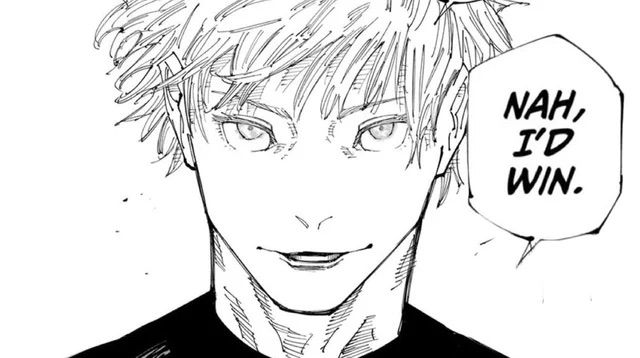

Free The Homie Gojo
Take the amplified and the reversal, then smash together those two different expressions of infinity to create and push out imaginary mass.
Imaginary Technique: Purple.

How did Gojo end up in the clink?
- Gojo got lowered into the subway on halloween just chillin
- Gojo got jumped by 3 other lower grade curses with no money
- His #1 opp/possibly ex-boyfriend snitched on him to the feds and locked him up in a rubix cube
Live footage of Gojo getting his J's stolen